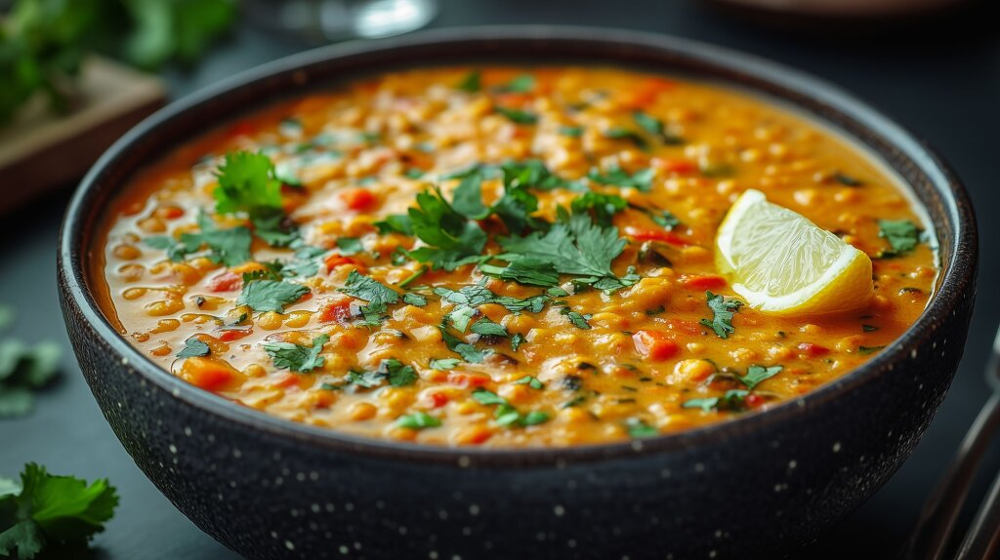

Home
Dahl Recipe

Description
This Dahl is a quick and flavorful lentil-based curry. The secret to its remarkably short
preparation time – just five minutes – lies in the use of fast-cooking vegetables and
pre-cooked legumes.
The foundation of its flavor is built upon what can be considered an Indian-style stock,
crafted from shallots or green onions, garlic, ginger, and chili. This quartet of ingredients
creates a robust base layer of flavor upon which all other aromas are built.
The sauce itself is primarily composed of coconut milk and chopped tomatoes. The coconut milk
provides a sweet, creamy richness that perfectly balances the acidity from the tomatoes.
Spinach is incorporated to boost the dish's nutritional value; once it wilts, it adds an
almost creamy texture and a striking, vibrant green color that beautifully contrasts with the
rest of the dish.
Ingredients
- 400 g chickpeas
- 400 g cooked lentils
- 3 cloves garlic
- 20 g small nub of ginger
- 5 scallions/spring onions
- 2 tbsp oil
- 50 g baby spinach
- 400 g coconut milk
- ½ lime or lemon
- 15 g fresh coriander
- 10 cherry tomatoes
- 2 tbsp curry powder
- 1 tsp salt
- 2 tsp ground cumin
- ½ tsp turmeric
- ½ tsp black pepper
- 2 tbsp tamari or soy sauce
- 3 wholemeal pitta breads
Steps
-
Drain and rinse the chickpeas and lentils. Peel and finely chop the garlic and ginger, chop
the scallions, and halve the cherry tomatoes. Pick the coriander leaves and finely chop the
stalks.
-
Heat the oil in a large non-stick pan over high heat. Add the garlic and ginger to the pan,
then reduce the heat to medium. Cook for 2 minutes, stirring occasionally.
-
Add the scallions, cherry tomatoes, coriander stalks, and 1 tsp of salt to the pan. Cook for
a further minute.
-
Add the coconut milk, lentils, and chickpeas. Stir well. Then, add the curry powder, ground
cumin, turmeric, remaining salt, black pepper, tamari/soy sauce, and lime juice. Bring to a
boil, then reduce to a simmer for 5 minutes.
-
A few minutes before serving, add the spinach to wilt. Taste and adjust seasoning if needed.
-
Serve with toasted pitta breads, fresh coriander, and chilli flakes, if desired. Enjoy!